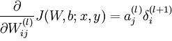

Caffe源码的前向传播与后向传播¶

概述¶
前向传播和后向传播是深度学习的精髓。也是神经网络的基础。
前向传播比较简单请看《Caffe应用之人脸识别》
分类的CNN是有监督的，就是在最后一层计算分类结果的loss，然后利用这个loss对整个网络进行更新，更新的关键就是计算梯度和偏置的导数dW和db，而Back Propagation主要就是为了解决前面的层的dW不容易计算的问题，具体是将loss通过一个残差delta一层一层往前传，因此无论是全连接层还是卷积层，全部是有监督的。
从简单的全连接层入手
全连接层例子¶
打开Inner_product_layer.cpp，里面的Backward_cpu函数实现了反向传播的过程。（如果使用的是GPU，则会调用Inner_product_layer.cu文件里的Backward_gpu函数，实现过程是类似的）
先通过LayerSetUp函数明确几个变量：
N_ = num_output;
K_ = bottom[0]->count(axis);
M_ = bottom[0]->count(0, axis);
bottom表示该层的输入，top表示该层的输出。
N_表示输出的特征维数，即输出的神经元的个数。
K_表示输入的样本的特征维数，即输入的神经元的个数。
M_表示样本个数。 因此全连接层的W维数就是N_×K_，b维数就是N_×1。 n×c×h×w格式，全连接层的W维数就是N_×K_×1×1，b维数就是N_×1×1×1，
weight_shape[0] = N_;
weight_shape[1] = K_;
vector<int> bias_shape(1, N_);
this->blobs_[1].reset(new Blob<Dtype>(bias_shape));
下面一行一行看Backward_cpu函数的代码，整个更新过程大概可以分成三步：
第一步
caffe_cpu_gemm<Dtype>(CblasTrans, CblasNoTrans, N_, K_, M_, (Dtype)1.,
top_diff, bottom_data, (Dtype)0., this->blobs_[0]->mutable_cpu_diff());
这一句是为了计算dW，对应公式就是
其中的bottom_data对应的是a，即输入的神经元激活值，维数为K_×N_，top_diff对应的是delta，维数是M_×N_，而caffe_cpu_gemm函数是对blas中的函数进行封装，实现了一个N_×M_的矩阵与一个M_×K_的矩阵相乘（注意此处乘之前对top_diff进行了转置）。相乘得到的结果保存于blobs_[0]->mutable_cpu_diff()，对应dW。
第二步
caffe_cpu_gemv<Dtype>(CblasTrans, M_, N_, (Dtype)1., top_diff,
bias_multiplier_.cpu_data(), (Dtype)0.,
this->blobs_[1]->mutable_cpu_diff());
这一句是为了计算db，对应公式为
caffe_cpu_gemv函数实现了一个M_×N_的矩阵与N_×1的向量进行乘积，其实主要实现的是对delta进行了一下转置，就得到了db的值，保存于blobs_[1]->mutable_cpu_diff()中。此处的与bias_multiplier_.cpu_data()相乘是实现对M_个样本求和，bias_multiplier_.cpu_data()是全1向量，从公式上看应该是取平均的，但是从loss传过来时已经取过平均了，此处直接求和即可。
第三步
caffe_cpu_gemm<Dtype>(CblasNoTrans, CblasNoTrans, M_, K_, N_, (Dtype)1.,
top_diff, this->blobs_[0]->cpu_data(), (Dtype)0.,
bottom[0]->mutable_cpu_diff());
这一句是为了利用后面层传过来的delta_l+1计算本层的delta_l，对应公式为
主要Inner_product层里面并没有激活函数，因此没有乘f’，与f’的相乘写在ReLU层的Backward函数里了，因此这一句里只有W和delta_l+1相乘。blobs_[0]->cpu_data()对应W，维度是N_×K_，bottom[0]->mutable_cpu_diff()是本层的delta_l，维度是M_×K_。
** 第四步**
Backward_cpu函数终于结束了。但是更新其实没结束，Backward_cpu函数里只计算了dW，db，delta，并没有对W和b进行更新.caffe里的反向传播过程只是计算每层的梯度的导数并存储，把所有层都计算完之后，在solver.cpp里面统一对整个网络进行了更新。具体是在step函数里先通过ComputeUpdateValue把learning rate、momentum、weight_decay什么的都算好，然后调用了Net.cpp的update函数逐层更新，对应公式就是：